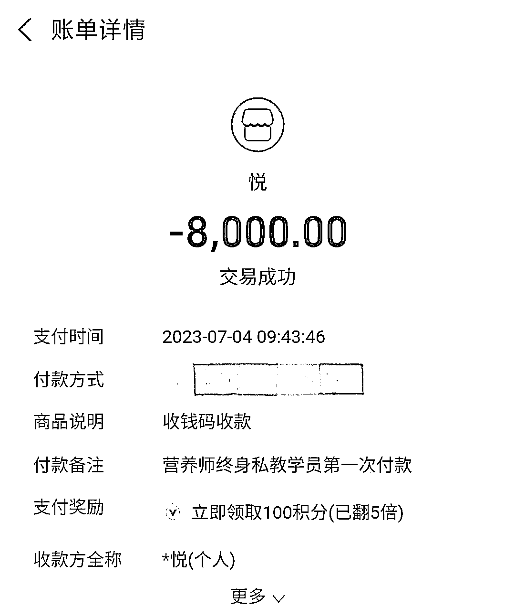
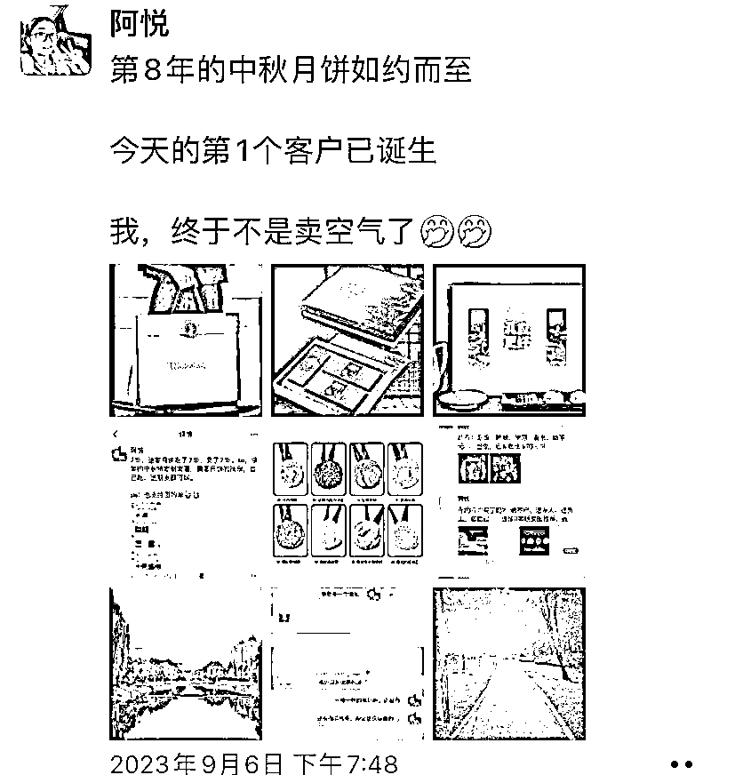

来源：https://n28vbku1px.feishu.cn/docx/UayZdWMBZonFwJx12t0cQE0Lnxh
金九银十，古人诚不欺我。就在9月，我的收入，达到了有史以来的最高峰。
此处，感谢梁靠谱的推荐入了生财，并push我写下了自己9月的复盘文
我是阿悦，一名营养师，主要做3个方向的业务：
1.帮助有减重需求的朋友健康减重不反弹，调理高血压、糖尿病等慢性疾病；
2.帮助终身制营养私教学员，做自己的个人IP，做懂专业，会赚钱的营养师；
3.卖一些（季节性）健康好货，比如九月帮朋友卖了自家山头的猕猴桃、朋友自己厂的月饼，恰逢中秋国庆，因为送礼需求，又增加了海参和燕窝。
主要平台是在微信，下图是我的微信好友截图，这个微信里，除了爸妈亲戚、朋友和我的付费客户、付费学员，以有付费意识的同学为主。也就是说，这个微信的好友，我和她至少在一个群里或为某一个老师、某一个课程或者训练营付费过。
加入生财不到1年。今天这个帖子，和大家分享，营养师赛道，如何通过卖自己的产品，实现一个不错的收入。
文中内容，包含3个板块
一、帮客户尽快出效果，是转介绍的一个关键点
二、高客单产品，如何灵活收款
三、找到适合自己身份角色卖的产品，能事半功倍
sheng老bingsi，是大家都比较担心、比较忌讳的事情，因此，她的反面，健康长寿的活、体态轻盈、身体健康，变瘦变美，是大家所追求的，大家也愿意为之付费。
而营养师这个职业，在近几年，也渐渐开始被大家熟知，甚至愿意付费，邀请营养师做咨询，做健康管理，这，也是大势所趋。
在我们自己能力范围内，让自己和家人远离高血压、糖尿病，更瘦更美更健康。
我的客户来源，更多的是微信好友，占比在85%。其他的客户，会从公众号、小红书来。一般年龄在35～40，女性居多，为自己、为另一半和父母做营养咨询和健康管理，也有一小部分为自己孩子做减肥咨询。
一、帮助客户尽快出成果，是转介绍的一个关键点
我的第一个高客单产品，是4980元的季度健康管理。如果你想减肥，这个季度的主题就是减肥，如果你想调理高血压、糖尿病，这个季度的主题就是如何调理高血压、糖尿病。
在这一个季度里，我们有客户的专属陪伴群，也有一对一专属健康管理方案。在前期，提供2～3次营养咨询，每一次解决1个具体的健康问题，并邀请、陪伴客户建立1～2个新的健康生活习惯。
中期，我们同样会有2～3次的健康生活随访、健康进度条跟进等，如果发现客户在行动中有偏差或者出现了停滞，我们会及时了解原因，一起做出符合客户现实的健康管理新方案，甚至，我们还有7～14天的暂停服务，如果确实来不急有什么事，是允许暂停的，在后面补上这个时间，
后期，我们会有1个1年后的健康回访，如果客户变胖了，除开客观、不可抗逆的一些原因，我们会邀请客户，免费在参加一个季度的健康管理，为客户的健康，负责到底。
关于减肥的客户，需求的是什么，瘦，瘦得轻松一点，能吃饱饭，同时也不用锻炼得气喘吁吁的，最好还要不反弹。
有高血压、糖尿病的客户，最直观的改变，就是体检表上的数据越来越好，能够享受健康生活。
基于此，在确定客户方案前期，就要设计轻松简单、行之有效的一些动作；也要结合客户是否出差，外卖or在家就餐频率，额外设计出1～2套备选方案，方便客户应急。
也会搭配一些健康课程，方便客户自学，了解一些健康知识，做自己健康的第一责任人。
（这是优化后的健康管理，新增加板块，还在录制ing）
客户愿意行动，迈出第一步，是改善健康的一大步，也为后面的效果做了强有力的铺垫。
如何让客户快速、短期看见效果，第一是给信心，第二是给陪伴，第三是引导客户关注自身变化。只有当客户感觉到自己在变好时，他后面的行动才会更加积极配合，效果也更明显。
同时，客户在行动中，在拿到理想效果后，这两个节点也是转介绍的关键。
一是有需求的客户，可能会因你现有客户的行动和改变，也成为你的客户；二是围观效果的客户，在亲眼看到效果后，也会来。
这里很重要的一个点就是，帮助客户成功，就是让我们成功。最后，在客户减肥结束后，我们也要记得在回访时，加上一句，如果你身边有需要减肥的朋友，也可以给我推荐。
有时候你不说，客户自己也会推荐；但有时候你不说，客户就会忘了；还有一种情况是，你说了、客户推荐得更多。所以，多做一点，准没有错。
我有一个客户，给我转介绍了10个，是目前为止的转介绍第一名。
对于转介绍多的客户，一定要记得重点维护，比如给一部分佣金，因为没有客户转介绍，你可能一分钱也没有；比如节假日或者中秋、国庆这样的特定节日，记得送礼物，表达心意。
转介绍的成功，就是让客户真的实现她的预期，甚至超越他的预期。这样，她转介绍得会更有动力；同时，也认真对待她转介绍的客户，哪怕没成交，也要告知转介绍客户与她相关的一些健康知识，至少让人家觉得没有白加你一趟。多方有面，才有更多的可能性和未来。
二、高客单产品，如何灵活收款
我的一对一终身制营养私教学员，费用为16800，一次付费，以后终身不需要再额外付费。教学员专业的营养知识，教学员商业知识，让每一个终身制私教学员，都懂专业会赚钱。
但是16800对于不少的人而言，确实是一笔不小的支出，如果学员确实有付费意愿，且有付费能力，可以商定分期付款，比如第一个月打多少钱，第二个月打多少钱，或者第一次如何付多少费用，第二次付多少费用，3个月内付完款就行。

这里，只要学员一开始付费，就开始交付，没准，有的学员，也可以通过专业知识，赢得自己应有的报酬。
同理，帮学员成功，也是帮我们自己成功。
在交付终身制私教学员时，我们在前期的1～3个月，会给学员一个自由安排学习时间，同时，会有一个每周一次的学习复盘。
学员有自己的专属交付小群，有专业的营养课学习，有专门的商业知识学习，同时，小红书、朋友圈等营销类课程，都会为学员配齐，并且有专门的老师进行答疑和陪跑，即双导师制➕专属陪伴群加每周1次复盘/答疑➕无限次提问。
这是针对更高客单，交付内容更多，交付团队配置也更齐全，并且是终身制，不再需要二次付费。
三、找到适合自己身份角色卖的产品，能事半功倍

月饼是朋友家的，我在朋友圈卖了8年。今年恰逢国庆，物流各方面也非常给力，很多人自己吃、送亲朋好友，所以，销量也是很好的。猕猴桃是朋友家的，今年第2年在朋友圈卖。
因为这两个常见、应季的产品，也激活了我一部分朋友圈，大家冲着我的安利下单。有的还延展的聊了健康管理和营养私教。
后来，有的客户直接问有没有其他礼盒产品，或者稍微高端一点的，于是，又链接了海参和燕窝。
这些产品，基于我营养师的身份，基于吃货的推荐，大家认可度还是很高的。
后期，可能还会在朋友圈卖另一个朋友家的梨和梨膏，都是我自己吃过、可追溯产地、源头的日常好物。
这是目前分享的3个部分内容，在朋友圈卖货卖自己，我们要勇敢一点，也要做好被拒绝的准备。但是，如果我们一直深耕，客户有需要，一定会找我们的。
最后，大家一定要把自己的身份角色，多维度转换，是营养师，也是销售员，甚至也可以是销冠。如果是在做营养咨询、写健康管理方案，自己的角色就一定是营养师；如果前期是遇到客户、学员咨询，自己的角色，就是销售员。
千万不要有所谓的知识份子的清高，做方案时，觉得这点钱，要干那么多活；“卖自己”时，又觉得，营养师卖东西，不好意思谈钱，要是还遇到客户讲价，一下子就要有情绪。
营养师的角色，是帮助客户拿到健康的结果；销售员的角色，是为客户做选择，告知客户，你选我，没错，是要达成成交，把自己愉快的卖出去，也让客户愉快的买进。
不确定性有很多，但只要你一直在，一直深耕某个领域，你在，就是最大的确定性。
再次感谢生财有术平台，感谢靠谱的小皮鞭。